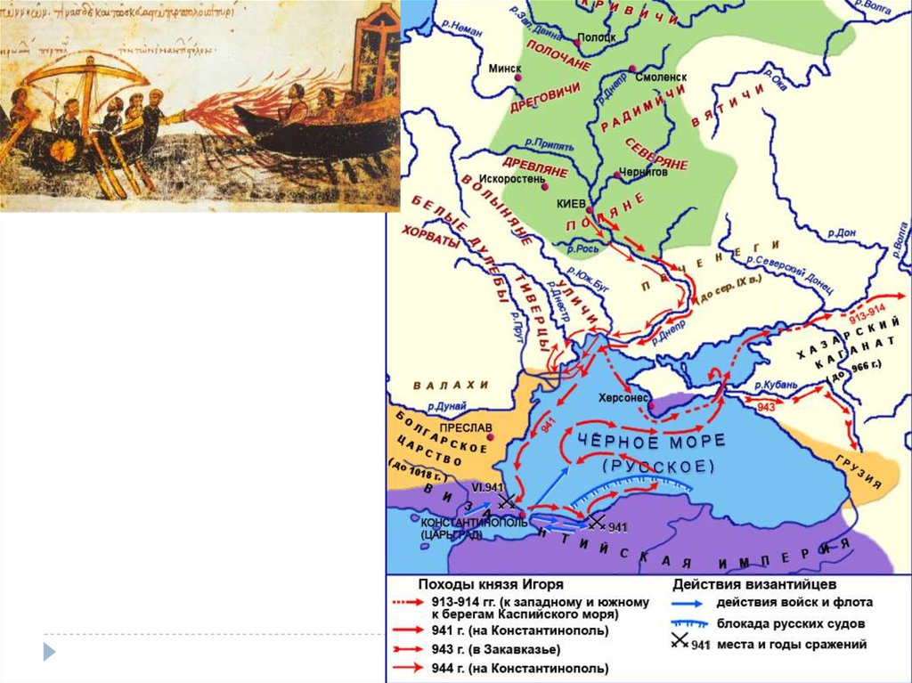

Походы Игоря на Византию
Первый поход (941 год)
Князь Игорь Рюрикович, стремившийся утвердить авторитет Руси и получить выгодные торговые условия, в 941 году предпринял масштабный морской поход на Константинополь. Русский флот, состоявший, по некоторым оценкам, из около 10 000 ладей, появился вблизи Босфора [[17]].
Византийский император Роман I Лакапин, не имевший достаточных военных сил для открытого боя, применил хитрость. Он собрал старые суда и вооружил их «греческим огнём» — секретным зажигательным оружием. В морском сражении русский флот был практически полностью уничтожен. Греческий огонь, горевший даже на воде, наводил ужас на русских воинов [[11]].

Второй поход (944 год)
Несмотря на катастрофическое поражение, Игорь не отказался от борьбы. В 944 году он собрал новое войско — уже не только из варягов и руси, но и привлёк печенегов в качестве союзников. Узнав о приближении огромного русского войска, император Роман I предпочёл избежать войны и предложил мир на условиях, близких к договору Олега, но с рядом ограничений [[17]].
Договор 944 года был менее выгоден для Руси: отменялась беспошлинная торговля, русские купцы должны были платить пошлину, запрещалось русским воинам зимовать вблизи Константинополя (в устье Днепра — на острове Святого Эферия).
Договор 944 года: отличия от 911 г.
• Отмена беспошлинной торговли для русских купцов
• Запрет русским воинам зимовать у Царьграда
• Русские обязались защищать византийские владения в Крыму
• Обязательство Руси не позволять другим князьям воевать против Византии
• Более жёсткие условия уголовного права
Историческая оценка
Походы Игоря показали, что Русь оставалась серьёзной военной силой даже после поражения 941 года. Византия была вынуждена считаться с русским князем и заключать договоры.
Однако результаты походов были скромнее, чем у Олега, что свидетельствует о росте военной мощи самой Византии.

Причины поражения 941 года
Поражение русского флота в 941 году объясняется несколькими факторами:
- Применение византийцами «греческого огня» — секретного оружия, к которому русские не были готовы
- Отсутствие у русского флота опыта морских сражений против такого оружия
- Тактическая ошибка: русские корабли были собраны в плотную группировку, что сделало их уязвимыми для зажигательных снарядов
- Византийский флот имел преимущество в манёвренности и вооружении
«Греческий огонь» — секретное оружие Византии
- Зажигательная смесь, горевшая даже на воде
- Состав держался в строжайшем секрете
- Предположительно: нефть, сера, селитра, смола
- Метался специальными сифонами (прообразами огнемётов)
- Наводил психологический ужас на противника
- Не раз спасал Константинополь от осады
Последствия походов Игоря
Несмотря на военные неудачи, походы Игоря имели важные последствия:
- Византия была вынуждена заключить новый договор с Русью
- Русь сохранила статус серьёзного военного противника
- Торговые отношения между Русью и Византией продолжались
- Опыт походов был учтён при подготовке будущих военных кампаний